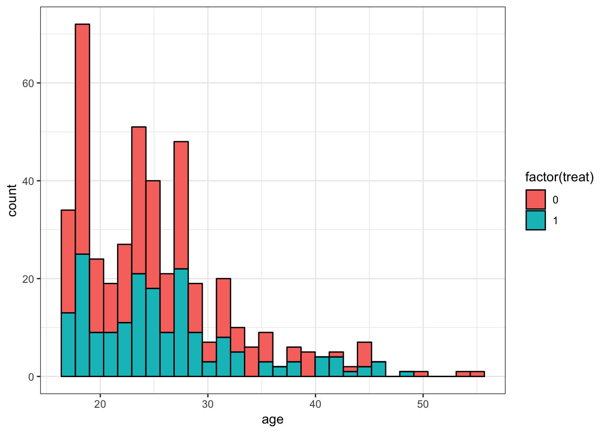
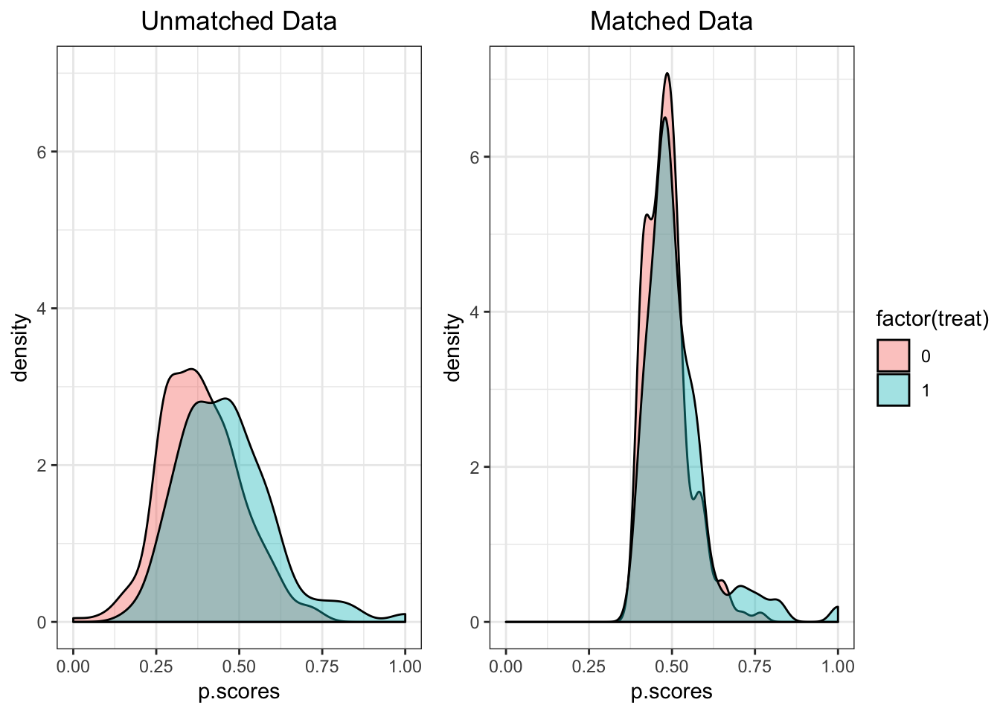
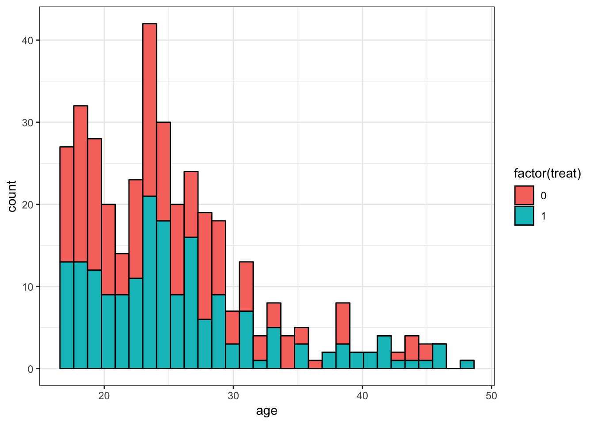

Matching Unbalanced Subsamples
This code is inspired by indications found in HilL&Gelman book “Data Analysis Using Regression and Multilevel/Hierarchical Models” https://g.co/kgs/zkuYrJ
In psychology research, we are often interested in comparing groups on some characteristics of interest. However, the samples may often differ by some other characteristics that may play as a confound when we investigate the sources of the variance. One way of approaching this problem is to improve the matching between the subsample, trying to increase the overlap on certain characteristics.
With this approach, we calculate propensity scores for each participants and pair them, to exclude participants that do not have a match.
Initialise Session and Data
The example dataframe lalonde contains data of two treatment groups with demographic information.
# install.packages("arm")
library(arm)
data(lalonde)
str(lalonde)## 'data.frame': 445 obs. of 12 variables:
## $ age : num 37 22 30 27 33 22 23 32 22 33 ...
## $ educ : num 11 9 12 11 8 9 12 11 16 12 ...
## $ black : num 1 0 1 1 1 1 1 1 1 0 ...
## $ hisp : num 0 1 0 0 0 0 0 0 0 0 ...
## $ married: num 1 0 0 0 0 0 0 0 0 1 ...
## $ nodegr : num 1 1 0 1 1 1 0 1 0 0 ...
## $ re74 : num 0 0 0 0 0 0 0 0 0 0 ...
## $ re75 : num 0 0 0 0 0 0 0 0 0 0 ...
## $ re78 : num 9930 3596 24910 7506 290 ...
## $ u74 : num 1 1 1 1 1 1 1 1 1 1 ...
## $ u75 : num 1 1 1 1 1 1 1 1 1 1 ...
## $ treat : num 1 1 1 1 1 1 1 1 1 1 ...Display unmatched data
By visualising the data, we can see that there is an imbalance by age; for example, participants below 20 are over-represeted in the control group (treatment = 0).
library(ggplot2)
ggplot(data=lalonde,
aes(x=age,
fill=factor(treat))) +
geom_histogram(col="black")
Compute propensity scores
We estimate the probability of pertaining to the treatment group based on the participants characteristics with a binomial model (fit). We then use a function (arm::matching) to match 1 observation in the treatment==1 arm, with one most similar in the arm with treatment==0. Then we subset the original dataset based on the matched pairs of observations.
fit <- glm(treat ~ re74 + re75 + age + factor(educ) +
black + hisp + married + nodegr + u74 + u75,
data=lalonde,
family=binomial(link="logit"))
pscores <- predict(fit, type="response")
matches <- matching(z=lalonde$treat, score=pscores)
matched <- lalonde[matches$matched,]Propensity scores calculated from the binomial model (each row corresponds to 1 participant):
head(cbind(pscores))## pscores
## 1 0.3950195
## 2 0.2496017
## 3 0.4759244
## 4 0.3414587
## 5 0.4513412
## 6 0.3900016The propensity score is the probablityof being assigned to treatment==1 based on the participants characteristics. ideally, we want the two groups to be composed by individuals with the same probability of being assigned to both.
Matches show the indices (position in dataset) of a couple of matched observations, such as:
ind <- matches %>%
tibble::rownames_to_column("index") %>%
select(-pairs) %>%
filter(matched==matched[1] | matched==index[1])
ind## index matched
## 1 1 197
## 2 197 1These two observations are matched together based on the similarity of the propensity score (0.394865 for observation number 197 and 0.3950195 for observation number 1).
The matched dataset only includes participants that can be coupled into pairs:
nrow(matched)## [1] 370We excluded 75 participants.
Compare distribution of propensity scores
Why did we gain from the the exclusion of 75 participants? Hopefully, the subsamples overlap better with respect to the confounding variables. Let’s check the propensity scores of the matched sample.
fit.m <- glm(treat ~ re74 + re75 + age + factor(educ) +
black + hisp + married + nodegr + u74 + u75,
data=matched,
family=binomial(link="logit"))
pscores.m <- predict(fit.m, type="response")library(dplyr)
lalonde <- lalonde %>%
mutate(p.scores=pscores)
matched <- matched %>%
mutate(p.scores=pscores.m)
#plot the unmatched data
unm.d <- ggplot(data=lalonde,
aes(x=p.scores, fill=factor(treat))) +
geom_density(col="black", alpha=0.4) +
labs(title="Unmatched Data") +
theme(plot.title = element_text(hjust = 0.5)) +
ylim(0,7)
#plot the matched data
m.d <- ggplot(data=matched,
aes(x=p.scores, fill=factor(treat))) +
geom_density(col="black", alpha=0.4) +
labs(title="Matched Data") +
theme(plot.title = element_text(hjust = 0.5)) +
xlim(0,1)
# plot together
library(ggpubr)
ggarrange(unm.d, m.d, common.legend = T, legend = "right")
The unmatched data displayed a partial separation based on propensity scores, meaning that the variables forming the propensity score might have easily confounded the treatment effect. This might happen in situations where participants with specific characteristics might be more easily recruited as a target/control group.
Display matched data
We can display the matched data by any of the categorical variables in the dataset, for example age. From the plot, we can see that approximately 50% of each age group is distributed in the treatment and control group for most of the groups. Participants in their 20s are not over-represented anymore in the control group.
ggplot(data=matched,
aes(x=age, fill=factor(treat))) +
geom_histogram(col="black")
Check balance
We can display the difference in means of the matched/unmatched data.
b.stats <- balance(lalonde, matched, fit)
plot(b.stats)
## $raw
## re74 re75 age factor(educ)4 factor(educ)5
## -0.002159921 0.083863254 0.107277121 -0.087705802 0.158623414
## factor(educ)6 factor(educ)7 factor(educ)8 factor(educ)9 factor(educ)10
## 0.078298987 -0.098299879 -0.118377488 0.057923710 -0.006921703
## factor(educ)11 factor(educ)12 factor(educ)13 factor(educ)14 factor(educ)15
## -0.256078933 -0.072042948 0.190980849 0.138025647 0.148068395
## factor(educ)16 black hisp married nodegr
## 0.103975049 0.103975049 0.043886611 -0.174561071 0.093640701
## u74 u75
## -0.303986439 -0.094140477
##
## $matched
## re74 re75 age factor(educ)4 factor(educ)5
## 0.06621614 0.03835607 0.13615155 0.36978662 0.04823636
## factor(educ)6 factor(educ)7 factor(educ)8 factor(educ)9 factor(educ)10
## 0.00000000 0.05324577 -0.03971374 -0.11366162 0.01499702
## factor(educ)11 factor(educ)12 factor(educ)13 factor(educ)14 factor(educ)15
## -0.14431246 0.04961898 0.04280605 0.09321213 0.04139547
## factor(educ)16 black hisp married nodegr
## 0.10397505 -0.31192515 0.00000000 0.13694015 -0.17185823
## u74 u75
## -0.03896622 -0.04858863The open circles represent the unmatched data; the closer the estimate to zero, the better. We can see that most difference scores improved, but some got worst, probably due to the exclusion of small categories.